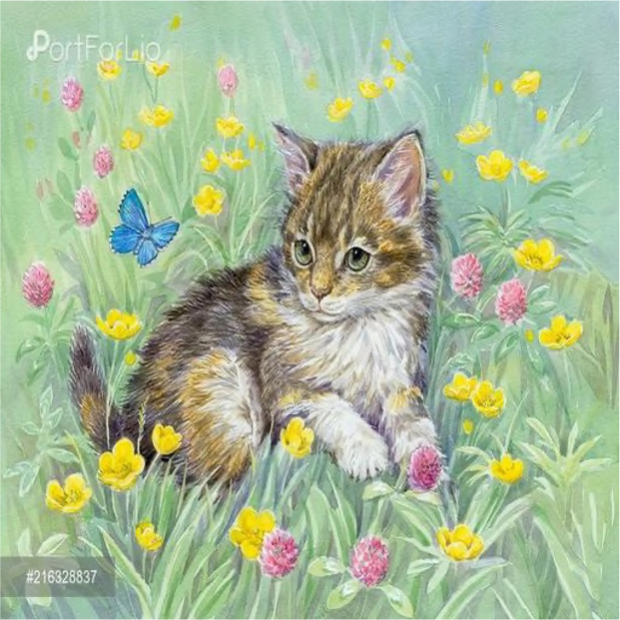
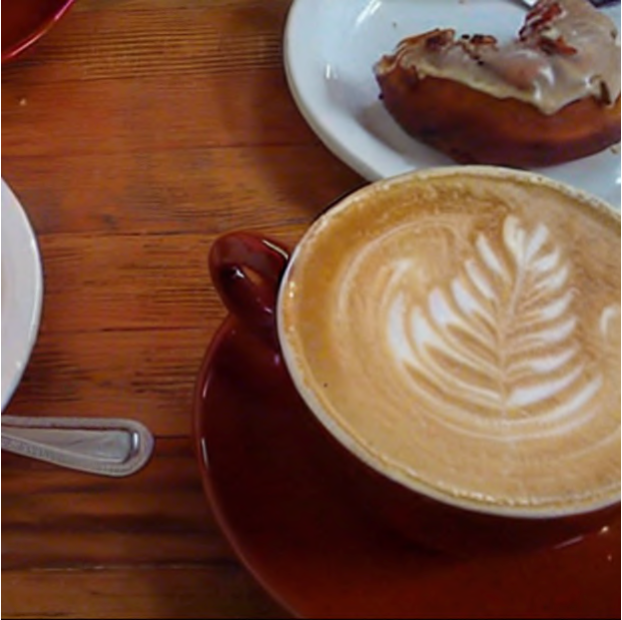
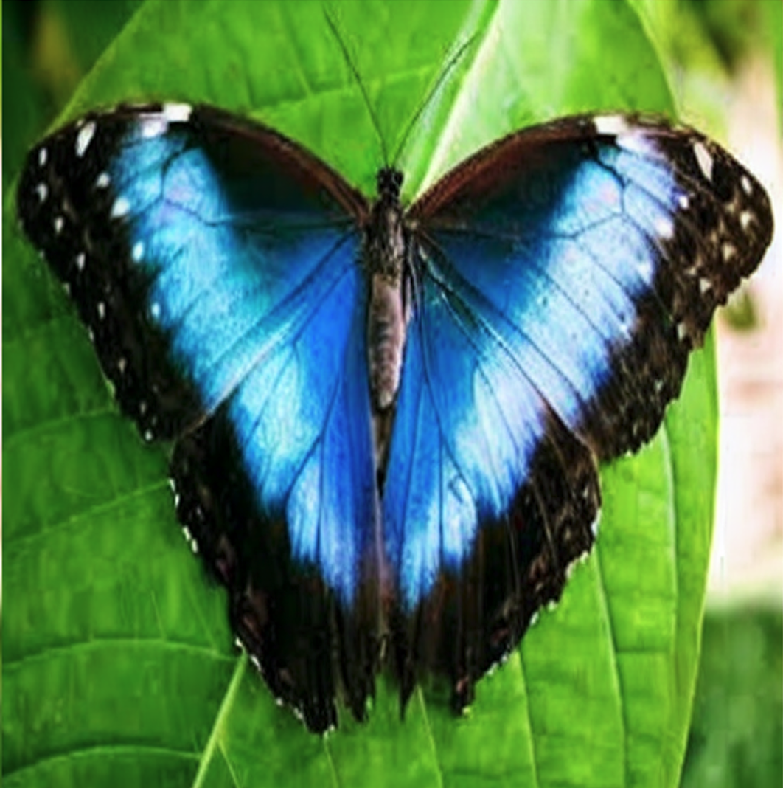
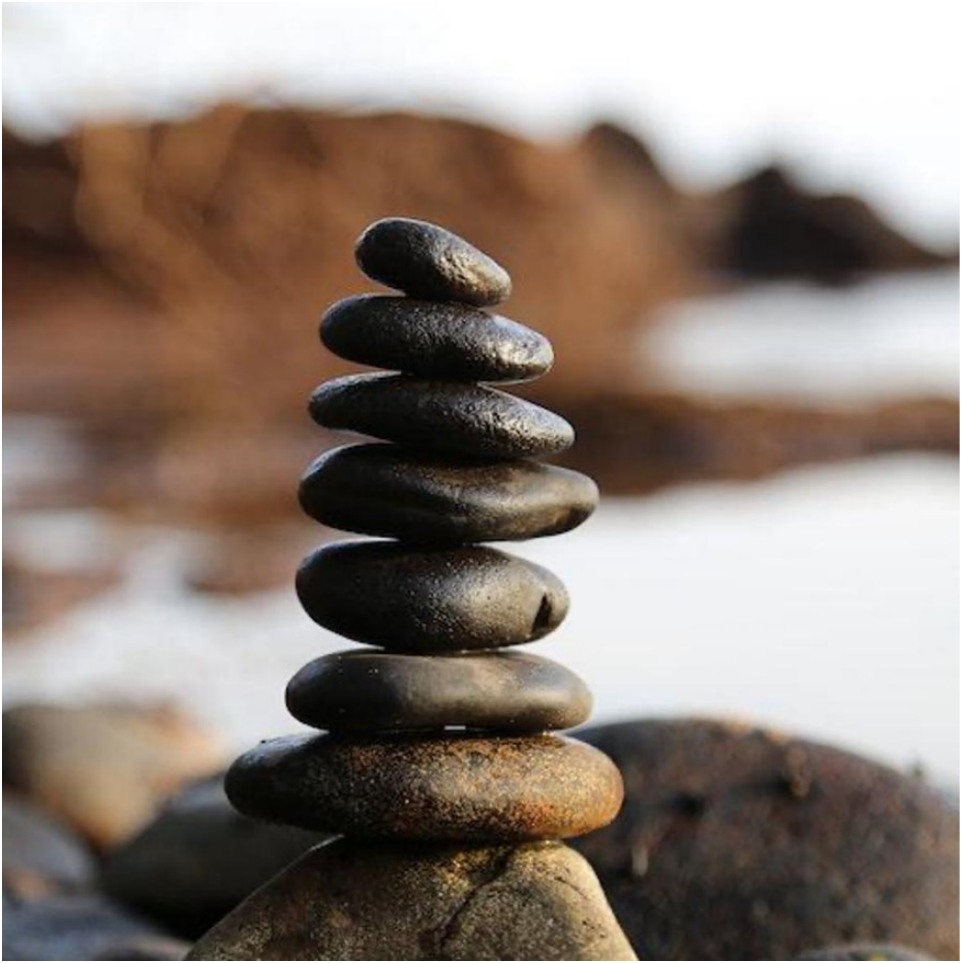
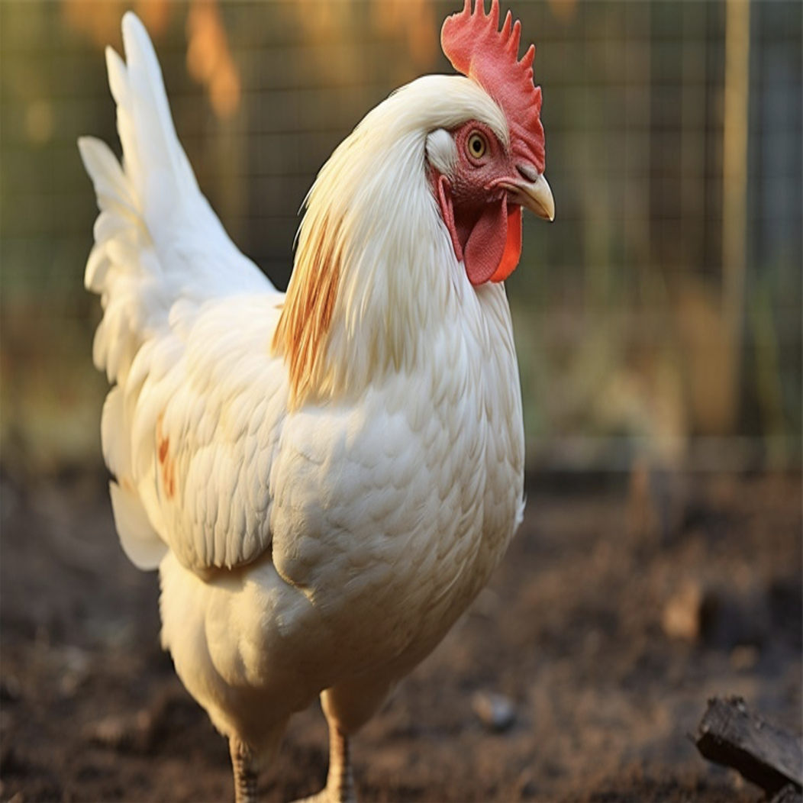
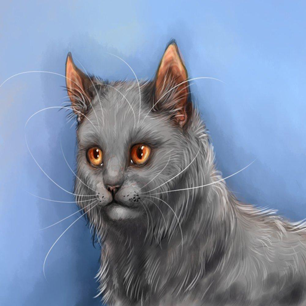
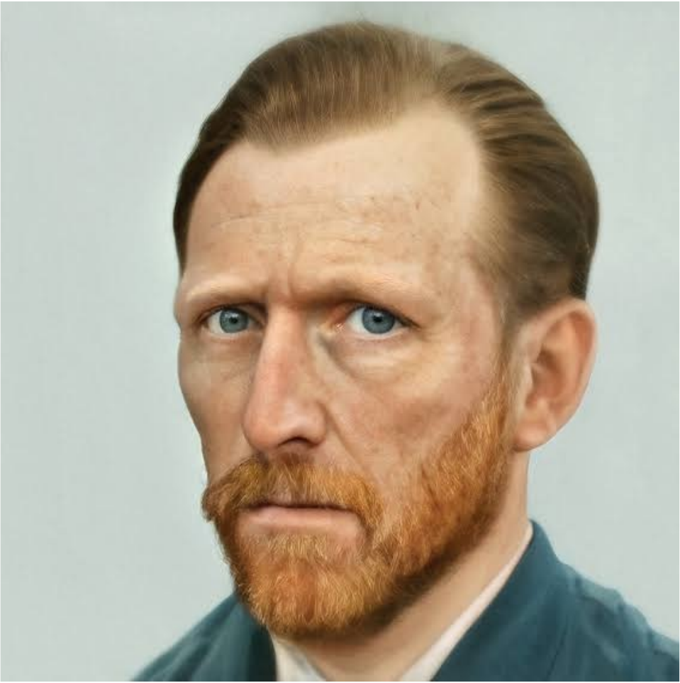
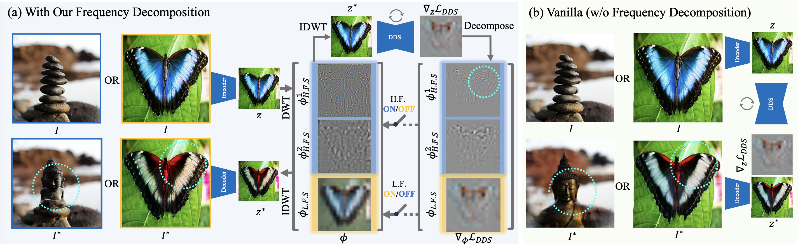

FDS: Frequency-Aware Denoising Score for Text-Guided Latent Diffusion Image Editing









Text-guided image editing using Text-to-Image (T2I) models often fails to yield satisfactory results, frequently introducing unintended modifications such as loss of local details and color alterations. In this paper, we analyze these failure cases and attribute them to the indiscriminate optimization across all frequency bands, even though only specific frequencies may require adjustment. To address this, we introduce a simple yet effective approach that enables selective optimization of specific frequency bands within spatially localized regions, allowing for precise edits. Our method leverages wavelets to decompose images into different spatial resolutions across multiple frequency bands, enabling precise modifications across different levels of detail. To extend the applicability of our approach, we also provide a comparative analysis of different frequency-domain techniques. Additionally, we extend our method to 3D texture editing by performing frequency decomposition on the triplane representation, achieving frequency-aware adjustments for 3D textures editing. Quantitative evaluations and user studies demonstrate the effectiveness of our method in producing high-quality and precise edits. Code will be released upon publication.
Overview of our model architecture for 2D image editing.



On March 25, 2025, OpenAI released 4o Image Generation, exhibiting impressive image generation capabilities. However, we noticed some artifacts during editing, such as non-faithful preservation of details and re-drawing instead of actual editing. We present some of our early experimental comparisons to highlight these differences.
If you find our work useful or interesting, please consider citing our paper:
@article{ren2025fds,
title={FDS: Frequency-Aware Denoising Score for Text-Guided Latent Diffusion Image Editing},
author={Ren, Yufan and Jiang, Zicong and Zhang, Tong and Forchhammer, Sören and Süsstrunk, Sabine},
journal={arXiv preprint arXiv:2503.19191},
year={2025}
}